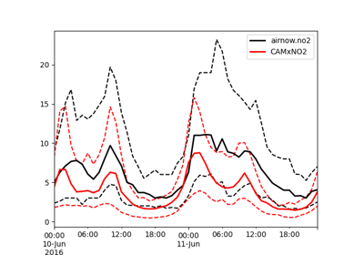

Model Performance Evaluation¶
There are currently two model performance examples. These are meant to be instructive and do not cover all possibilities. These examples use EPA’s RSIG to aquire AirNow or AQS observations, which is useful for rapid evaluation and retrospective evalaution.
Compare CAMx to hourly NO2.
Compare CAMx to Ozone Maximum Daily 8-hour Average.

Compare Model to Hourly Observations
Compare Model to Hourly Observations